Context
Engineers gives the page a specific angle instead of repeating the navigation label.
Firm / 01
Firm opens as a clear engineering decision hub: what Core offers, who it helps, why it matters, and which route to take first.
The first screen combines positioning, proof, primary action, and fast internal navigation, so people can act immediately or compare the rest of the firm route with context.
Red-rule technical hero
Select the closest route and Core keeps the next step, proof, and follow-up expectation aligned with reliability and standards.
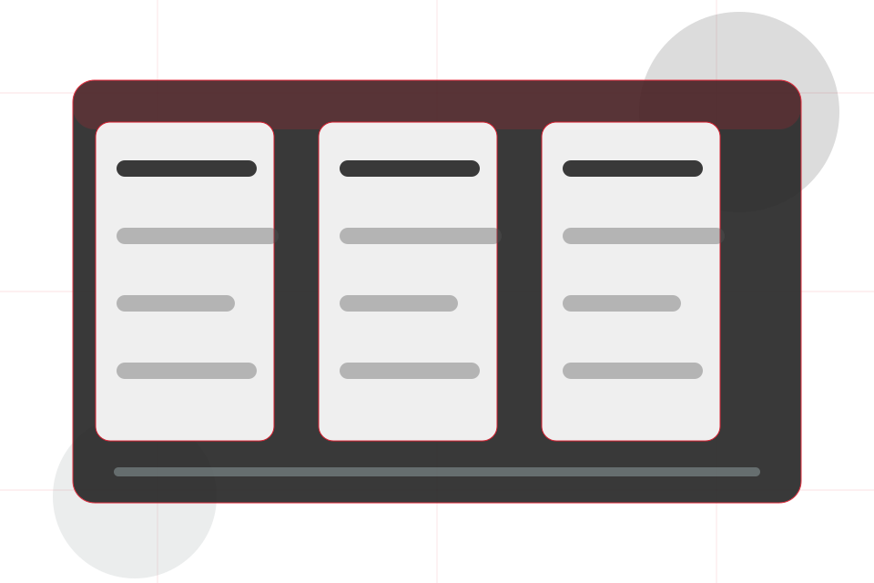
Firm / 02
Engineers adds technical context to the firm route, using the engineering project journal structure to support reliability and standards before visitors choose a next step.
Core uses engineering proof cards and focused copy to make the decision easier to scan, aligning the section with reliability and standards rather than filling space.
Explore Firm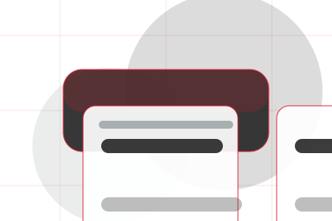
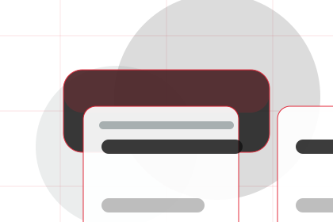
Engineers gives the page a specific angle instead of repeating the navigation label.
Firm / 03
Standards gives the proof layer for firm: standards, evidence, and reassurance that make the next decision feel grounded.
Instead of relying on vague claims, Core presents visible standards, process cues, and proof artifacts that help engineering visitors judge fit.
Explore FirmVisible proof that helps visitors believe the claims behind standards.
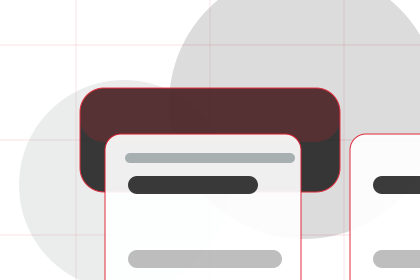
The quality, safety, or operating expectation this section makes explicit.
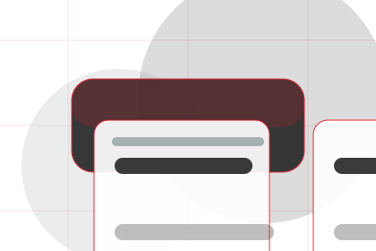
What becomes clearer before someone decides whether to ask an engineer.
Firm / 04
Credentials gives the proof layer for firm: standards, evidence, and reassurance that make the next decision feel grounded.
Instead of relying on vague claims, Core presents visible standards, process cues, and proof artifacts that help engineering visitors judge fit.
Explore FirmVisible proof that helps visitors believe the claims behind credentials.
The quality, safety, or operating expectation this section makes explicit.
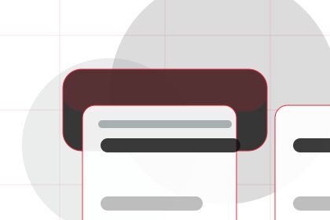
What becomes clearer before someone decides whether to ask an engineer.
Firm / 05
Tools adds technical context to the firm route, using the engineering project journal structure to support reliability and standards before visitors choose a next step.
Core uses engineering proof cards and focused copy to make the decision easier to scan, aligning the section with reliability and standards rather than filling space.
Explore FirmTools gives the page a specific angle instead of repeating the navigation label.
The engineering proof cards show what to compare, what to avoid, and what matters most for engineering, technical systems & specialist services visitors.
The final cue points to a useful internal route so the section keeps the journey moving.
Firm / 06
Values adds technical context to the firm route, using the engineering project journal structure to support reliability and standards before visitors choose a next step.
Core uses engineering proof cards and focused copy to make the decision easier to scan, aligning the section with reliability and standards rather than filling space.
Explore FirmValues gives the page a specific angle instead of repeating the navigation label.
The engineering proof cards show what to compare, what to avoid, and what matters most for engineering, technical systems & specialist services visitors.
The final cue points to a useful internal route so the section keeps the journey moving.
Firm / 07
Safety adds technical context to the firm route, using the engineering project journal structure to support reliability and standards before visitors choose a next step.
Core uses engineering proof cards and focused copy to make the decision easier to scan, aligning the section with reliability and standards rather than filling space.
Explore Firm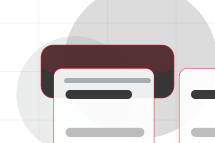
Safety gives the page a specific angle instead of repeating the navigation label.
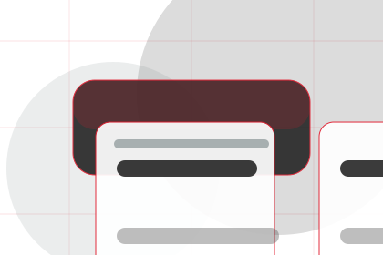
The engineering proof cards show what to compare, what to avoid, and what matters most for engineering, technical systems & specialist services visitors.
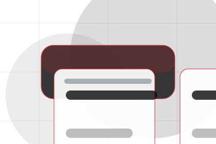
The final cue points to a useful internal route so the section keeps the journey moving.
Firm / 08
Experience adds technical context to the firm route, using the engineering project journal structure to support reliability and standards before visitors choose a next step.
Core uses engineering proof cards and focused copy to make the decision easier to scan, aligning the section with reliability and standards rather than filling space.
Explore FirmExperience gives the page a specific angle instead of repeating the navigation label.
The engineering proof cards show what to compare, what to avoid, and what matters most for engineering, technical systems & specialist services visitors.
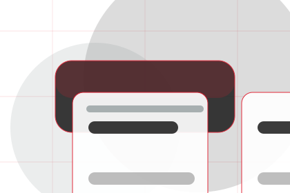
The final cue points to a useful internal route so the section keeps the journey moving.
Firm / 09
Trust gives the proof layer for firm: standards, evidence, and reassurance that make the next decision feel grounded.
Instead of relying on vague claims, Core presents visible standards, process cues, and proof artifacts that help engineering visitors judge fit.
Explore FirmVisible proof that helps visitors believe the claims behind trust.
The quality, safety, or operating expectation this section makes explicit.
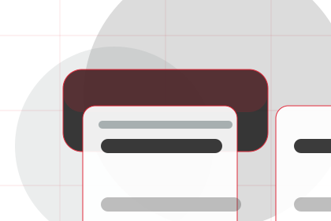
What becomes clearer before someone decides whether to ask an engineer.
Firm / 10
Core closes the firm route with a clear action, a quick reminder of the value, and a low-friction way to ask an engineer.
Visitors who are ready can use the primary action. Visitors who are still comparing can scan the section links, proof, and support routes before they ask an engineer.
Ask EngineerThe final block keeps the choice simple: act now, compare one more proof route, or send enough detail for a focused response.
Ask Engineerreliability and standards
An engineering authority site with editorial project blocks, red rules, technical proof, and expert enquiry. Firm ends with a direct path to ask an engineer, plus enough context for visitors who still need to compare.
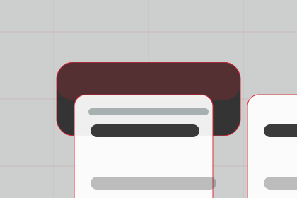
Ask EngineerInformation is provided for planning and should be reviewed for the final client, location, and operating rules.